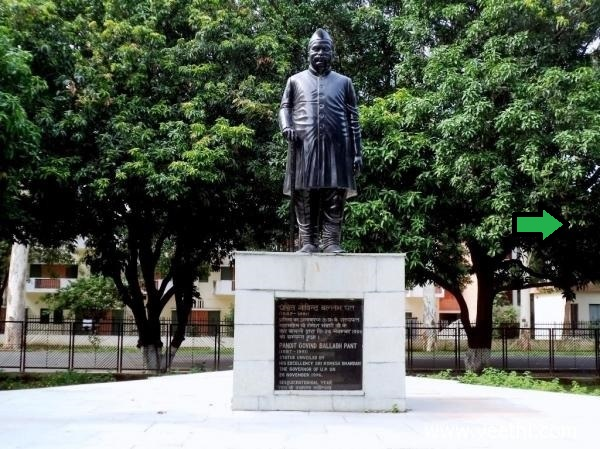

|  |
AboutGovind Bhawan has been named after the renowned freedom fighter Pandit Govind Ballabh Pant. Govind Ballabh Pant was born on September 10, 1887 in Khut village of Shyahi Devi hills in District Almora. His mother's name was Govindi. His father, Manorath Pant, was constantly on the road. Govind was brought up by his grandfather, Bandri Dutt Joshi, who played a significant part in moulding his political views. |
For more information about Pandit Govind Ballabh Pant, click on the statue else click on the arrow to move forward.